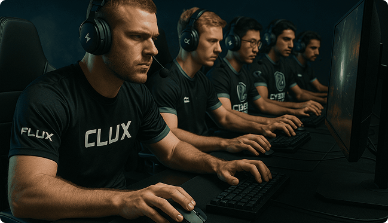

2025 年 10 月 28 日
FLUX 脈動今日驕傲地宣布一項重磅合作：我們正式成為全球頂級電競戰隊 Cyber Zenith (CZ) 的官方指定電競裝備夥伴！這項戰略聯盟標誌著 FLUX 品牌在專業競技領域的地位獲得了最高級別的認可，同時也證明了我們的產品經得起全球最頂尖賽事的嚴苛考驗。
Cyber Zenith（CZ）戰隊以其卓越的戰術執行力、無畏的競技精神，以及在各大國際賽事中的出色表現而聞名。他們對於裝備的要求極為苛刻，追求零延遲、極致精準的性能，以確保在分毫之間奪得勝利。
CZ 戰隊的隊員們將在所有訓練和國際級賽事中，全面採用 FLUX-G8 競技旗艦無線滑鼠。CZ 隊長 [可填寫隊長名稱] 表示： 「我們測試了市面上所有頂級滑鼠，但只有 FLUX 的 Hyper-Flow 零感無線系統真正做到了讓我們忘記延遲的存在。FLUX-G8 的手感、輕量化設計以及像素級的精準度，都給予了我們極大的信心。這不再是單純的贊助，而是戰術層級的裝備升級。」
本次合作不僅是 FLUX 品牌形象的提升，更是我們產品技術實力的體現。CZ 戰隊將成為我們產品開發的最前線測試實驗室。他們提供的實時反饋，將直接應用於下一代滑鼠的設計與優化，確保 FLUX 始終站在技術和性能的最前沿。
FLUX 脈動將與 Cyber Zenith 戰隊並肩作戰，共同征服未來的電競戰場，並將勝利所需的速度與精準，帶給每一位 FLUX 的使用者。請持續關注 CZ 戰隊的最新賽事動態，感受 FLUX 裝備在頂級賽場上的強勁脈動！